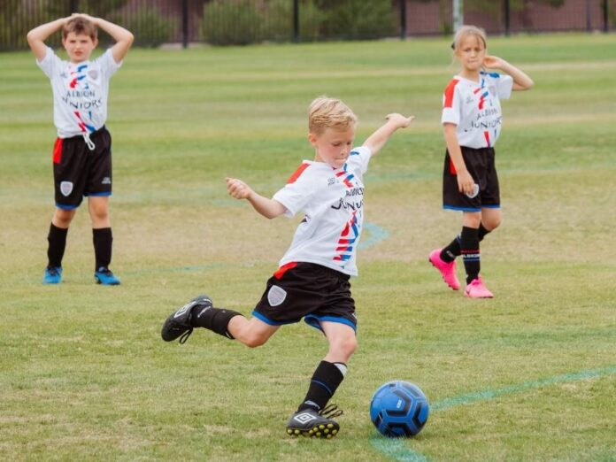

Apersepsi
perhatikan gambar berikut!

sumber: https://www.ruparupa.com/blog/manfaat-bermain-sepak-bola/
Pernahkah kalian selesai olahraga atau main bola di siang hari? Apa yang keluar dari kulit kalian?
perhatikan gambar berikut!

sumber: https://www.ruparupa.com/blog/manfaat-bermain-sepak-bola/
Pernahkah kalian selesai olahraga atau main bola di siang hari? Apa yang keluar dari kulit kalian?
Cermatilah permasalahan yang ada pada video dibawah ini dengan mengklik link dibawah ini:
link: https://youtu.be/cCC8vu7kuxs
Pertanyaan Pemicu:
| No | jawaban/solusi |
| 1. | |
| 2. | |
| 3. |
Setelah kelompok Anda menyusun dan merumuskan masalah, langkah selanjutnya adalah melakukan penyelidikan untuk menjawab rumusan masalah tersebut serta menemukan solusi yang tepat. Bacalah dan pahamilah bersama anggota kelompok presentasi materi yang disajikan di bawah ini. Selain memanfaatkan materi yang tersedia, Anda juga diperbolehkan mencari referensi tambahan dari berbagai sumber terpercaya, seperti buku, artikel ilmiah, jurnal, maupun sumber bold, guna memperdalam pemahaman dan memperkuat argumentasi
Kulit
Kulit atau integumen merupakan organ terbesar yang dimiliki oleh tubuh manusia. Jika kita bisa membentangkan seluruh permukaan kulit orang dewasa, luasnya akan mencapai sekitar 1,5 hingga 2 meter persegi, dengan berat total mencapai 15 persen dari berat badan keseluruhan. Kulit membungkus seluruh permukaan tubuh sehingga menjadi batas antara lingkungan internal tubuh dengan dunia luar yang penuh dengan berbagai macam ancaman seperti kuman, bahan kimia, sinar ultraviolet, dan benturan fisik. Namun, lebih dari sekadar pembungkus, kulit adalah organ yang sangat aktif dan dinamis. Ia terus-menerus memperbarui diri, merasakan sentuhan, mengatur suhu tubuh, dan yang paling penting dalam konteks pembelajaran kita saat ini, kulit juga berfungsi sebagai organ ekskresi yang membuang zat-zat sisa hasil metabolisme melalui keringat. Tanpa kulit yang sehat, tubuh akan rentan terhadap infeksi, dehidrasi, dan gangguan keseimbangan internal lainnya.
1. Anatomi Kulit (Struktur Lengkap)
Untuk memahami bagaimana kulit bisa menjalankan berbagai fungsinya, kita perlu mengenali struktur atau anatomi kulit terlebih dahulu. Kulit tersusun atas tiga lapisan utama yang masing-masing memiliki karakteristik dan peran yang berbeda, yaitu lapisan epidermis di bagian paling luar, lapisan dermis di bagian tengah, dan lapisan hipodermis atau subkutan yang merupakan lapisan paling dalam.
Epidermis adalah lapisan kulit paling luar yang langsung terlihat oleh mata dan bersentuhan dengan lingkungan. Menariknya, lapisan ini tidak mengandung pembuluh darah sama sekali, sehingga jika kita mengalami luka gores yang dangkal dan hanya mengenai epidermis, luka tersebut tidak akan mengeluarkan darah. Epidermis sendiri tersusun atas beberapa lapisan sel, dan lapisan yang paling atas disebut stratum korneum. Stratum korneum terdiri dari sel-sel mati yang keras dan pipih seperti genting rumah yang tersusun rapat. Sel-sel mati ini terus-menerus mengelupas dan digantikan oleh sel-sel baru dari lapisan di bawahnya. Proses pengelupasan ini adalah hal yang normal dan alami.
Di dalam lapisan epidermis juga terdapat sel-sel khusus yang disebut melanosit. Melanosit bertugas memproduksi pigmen melanin, yaitu zat warna yang memberikan warna khas pada kulit setiap orang, mulai dari sangat terang hingga sangat gelap. Selain menentukan warna kulit, melanin berfungsi sangat penting sebagai pelindung alami tubuh dari bahaya sinar ultraviolet (UV) matahari. Semakin banyak melanin yang diproduksi, semakin gelap warna kulit dan semakin tinggi pula perlindungan terhadap sinar UV. Inilah sebabnya mengapa kulit kita menjadi lebih gelap atau terbakar jika terpapar matahari terlalu lama tanpa perlindungan.
Lapisan hipodermis atau subkutan adalah lapisan kulit yang paling dalam. Lapisan ini terutama terdiri dari jaringan lemak atau adiposa yang berfungsi sebagai bantalan atau peredam benturan untuk melindungi organ-organ di bawahnya. Selain itu, lemak di hipodermis berperan sebagai isolator panas, artinya ia membantu menjaga suhu tubuh agar tetap stabil dan tidak mudah terpengaruh oleh suhu dingin dari lingkungan. Lapisan lemak ini juga merupakan tempat penyimpanan cadangan energi yang dapat digunakan tubuh saat diperlukan.
perhatikan gambar dibawah ini!

gambar: struktur kulit
Setelah memahami struktur kulit, sekarang kita akan membahas bagaimana kulit menjalankan fungsinya sebagai organ ekskresi. Proses ini terutama terjadi di kelenjar keringat yang berada di lapisan dermis. Ekskresi oleh kulit berarti proses pembuangan zat-zat sisa metabolisme yang tidak lagi dibutuhkan tubuh, dan zat sisa tersebut dikeluarkan dalam bentuk keringat.
untuk mempermudah pemahaman simaklah video berikut dengan mengklik link dibawah ini!
sumber: https://youtu.be/1-va7rUZ9uM
Presentasi dan diskusi kelas
Kegiatan Guru:
Guru menjelaskan poin-poin kunci yang harus dipahami siswa
Kesimpulan Akhir:
Kulit adalah organ luar biasa yang tidak hanya membungkus tubuh, tetapi juga aktif berkomunikasi dengan lingkungan dan membantu tubuh membuang sisa metabolisme. Menjaga kesehatan kulit berarti menjaga sistem ekskresi kita tetap optimal. Mandi teratur, mengeringkan badan, memakai pakaian bersih dan kering, serta tidak memakai makeup berlebihan adalah bentuk nyata menjaga organ ekskresi terbesar kita.
Perizinan di bawah Creative Commons Attribution Share Alike License 4.0